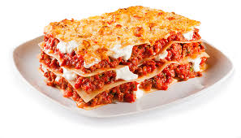

Lasagna
Home

Lasagna Description
Lasagna is a classic Italian dish made by layering sheets of pasta with rich meat sauce, creamy béchamel, and melted cheese.
It’s baked until golden and bubbly, creating a hearty meal that’s perfect for family gatherings.
Its origins trace back to the Emilia-Romagna region of Italy, but it has become a comfort food favorite worldwide.
Ingredients
- 9 lasagna noodles
- 500g (1 lb) ground beef
- 1 medium onion, chopped
- 2 cloves garlic, minced
- 800g (28 oz) canned crushed tomatoes
- 2 tablespoons tomato paste
- 2 teaspoons dried oregano
- 1 teaspoon dried basil
- Salt and pepper, to taste
- 250g (2 cups) ricotta cheese
- 1 large egg
- 250g (2 cups) shredded mozzarella cheese
- 50g (1/2 cup) grated Parmesan cheese
Instructions
- Preheat your oven to 180°C (350°F).
- Bring a large pot of salted water to a boil. Cook the lasagna noodles according to the package instructions until al dente. Drain and set aside.
- In a large skillet, cook the ground beef over medium heat until browned. Add the chopped onion and cook until softened, about 5 minutes.
- Stir in the minced garlic, crushed tomatoes, tomato paste, oregano, basil, salt, and pepper. Simmer for 15–20 minutes to let the flavors blend.
- In a separate bowl, mix the ricotta cheese with the egg until smooth.
- Spread a thin layer of meat sauce on the bottom of a baking dish. Place 3 noodles on top.
- Spread 1/3 of the ricotta mixture over the noodles, then sprinkle with mozzarella and Parmesan.
- Repeat the layers twice more: sauce → noodles → ricotta → mozzarella → Parmesan.
- Top the final layer with the remaining sauce and cheeses.
- Cover with aluminum foil and bake for 25 minutes. Remove the foil and bake for another 20 minutes, or until golden and bubbly.
- Let the lasagna rest for 10–15 minutes before slicing and serving.